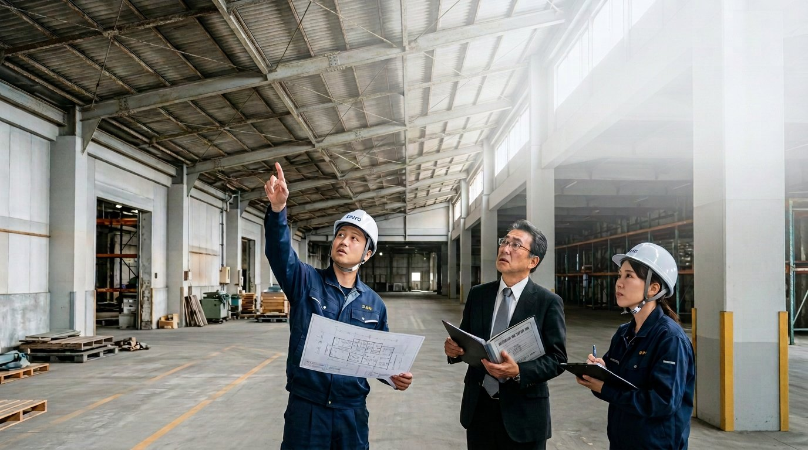
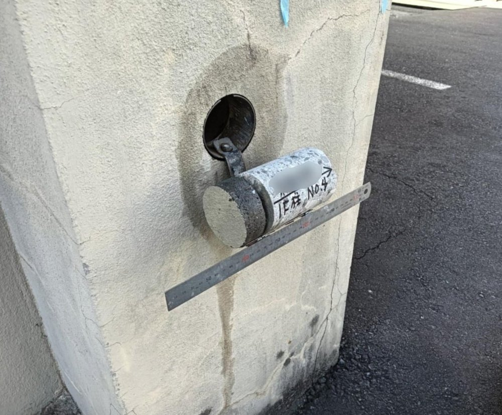
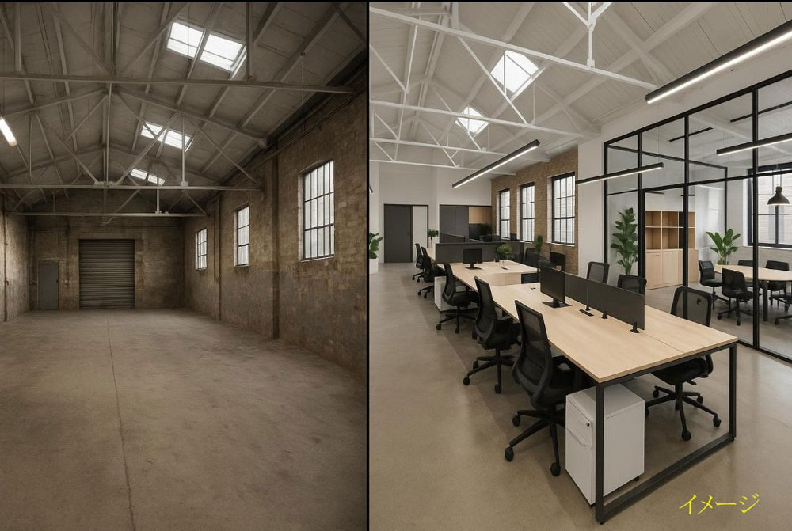

工場・倉庫の「外部営繕課」
建物を修理する会社ではなく、
建物の未来を考える会社。
営繕課がなくなった工場・倉庫に代わり、発注者側の立場で「何を・いつ・いくらで修繕するか」を判断し、建物の維持管理を年間を通じてご支援します。
まずは建物１棟の簡易診断から。初回のご相談は無料です。

現状の課題
営繕課がなくなった工場・倉庫で起きていること
経費削減で営繕課が廃止された結果、計画的な建物管理が失われつつあります。
01
修繕が場当たり的に
不具合が起きるたびに、工事会社へ個別に発注している。
02
見積の内容にばらつき
建築の専門知識を持つ担当者が少なく、仕様や価格が妥当か判断しにくい。
03
手間とリスクの増加
現地調査と相見積を繰り返す一方、修繕の先送りで雨漏りや故障による業務停止のおそれが高まる。
外部営繕課とは
昔の営繕課の機能を、外部から提供します
建物オーナーの立場に立つ、もうひとつの営繕課。工事を受注する側ではなく、発注者側に立つ第三者として判断を支援します。
企業内の営繕課
専門部署が建物を直接管理し、計画的に修繕していた
総務部門＋工事会社
専門人材が不在で、事後対応になりやすい
企業＋外部営繕課＋施工業者
発注者側に立つ第三者が、判断を支援する
外部営繕の意義
外部営繕課がもたらす４つの価値
中立な立場での判断
発注者側に立ち、修繕の必要性と価格の妥当性を判断します。
計画的な維持管理
修繕費を平準化し、建物の寿命を延ばして総費用を抑えます。
社内負担の軽減と情報の一元化
見積比較や業者選定を任せられ、記録も一か所にまとまります。
安全・法令順守と事業継続
耐震・消防等の対応状況を把握し、業務停止を防ぎます。
サービスの全体像
建物を「守る」「計画する」「変える」３つの柱


外部営繕課の業務支援（年間契約）
貴社の営繕課として、年間を通じてご支援します
日常の相談から点検、計画の更新、予算づくりまでをまとめてお引き受けします。
定期相談
定例相談と随時の電話・メール相談
見積のチェック
見積の数量・単価・工法を確認
業者選定の助言
見積依頼先の選定と比較・評価
不具合の相談
雨漏り・設備故障の一次対応の助言
年１回の建物点検
主要部位の点検と報告書の作成
修繕履歴の管理
工事・点検の記録を一元管理
長期修繕計画の更新
点検結果を反映して毎年見直し
年間修繕予算の作成
翌年度の修繕予算案の作成を支援
導入による変化
外部営繕課の導入で、建物管理はこう変わります
| 項目 | 現在 | 導入後 |
|---|---|---|
| 見積の判断 | 妥当かどうか判断しにくい | 第三者が数量・単価・工法を確認 |
| 修繕の時期 | 不具合が起きてから対応 | 点検と長期修繕計画に沿って実施 |
| 修繕予算 | 突発的な出費が多い | 年度ごとに平準化して予算化 |
| 記録と情報 | 担当者ごとに散らばっている | 修繕履歴・点検記録を一元管理 |
| 社内の負担 | 総務担当者が都度対応 | 専門的な判断を外部営繕課が担当 |
導入イメージ（モデルケース）
物流倉庫２棟（延床 約5,000㎡・年間の修繕工事費 約3,000万円）の場合
見積査定による
工事費の削減
12％年 約360万円
修繕費に占める
突発対応の割合
70→25％計画修繕へ移行
修繕予算と
実績の差
±40→10％予算が読める
担当者の
対応時間
月20→5時間75％減
雨漏り等による
作業停止
年3→0回早期発見で予防
※ 数値は説明のための架空のモデルケースであり、効果を保証するものではありません。
料金
顧問契約（外部営繕課 年間契約）
建物の規模に合わせて３つのプランをご用意しています。表示はすべて税別です。
延床 500㎡未満
50,000円／月
- 電話・メール相談（週１回・２時間程度まで）
- 見積書の簡易な確認
- 法令改正・技術動向の情報提供
延床 500㎡以上 1,500㎡未満
100,000円／月
- 電話・メール相談（週１回）
- 定例打合せ（月１回）
- 年１回の建物点検
- 修繕履歴の管理
延床 1,500㎡以上
200,000円～／月
- 電話・メール相談（随時）
- 定例打合せ（随時）
- 年１回の建物点検
- 修繕履歴の管理
主な個別業務（１回ごとのご依頼）
| 建物劣化状況調査（簡易診断） | 100,000～300,000円 |
| 工事見積の査定・適正価格の検討 | 200,000円～ |
| 工事見積の取得・工事業者の選定支援 | 100,000～200,000円 |
| 中長期修繕計画の策定支援 | 500,000円～ |
※ 顧問契約のお客様は個別業務を顧問先料金でお受けします。建物の規模・状況・業務の範囲により料金は変わります。交通費等の実費は別途です。
導入の流れ
まずは建物の現状を知ることから
いきなり年間契約ではなく、簡易診断や見積査定からお試しいただけます。
1
初回相談（無料）
建物の概要とお困りごとをお聞きします。
2
簡易診断・見積査定
現状の劣化や、お手元の見積を確認します。
3
結果のご報告
修繕の必要性を「今すぐ」「３〜５年以内」「当面不要」に分けてご報告します。
4
年間契約
貴社の営繕課として支援を開始します。
5
年次報告と更新
１年間の活動と翌年度の計画をご報告します。
よくある質問
よくあるご質問
工事も請け負うのですか？
外部営繕課は発注者側の立場で判断・支援を行うサービスです。工事は貴社が選ばれた施工業者に発注していただきます。当社や関係会社が工事を受注する場合は、事前にその旨をお知らせし、ご承諾をいただいたうえで行います。
建物１棟だけでも契約できますか？
はい、１棟からご契約いただけます。延床面積に応じたプランをご提案します。複数施設の場合は施設数に応じてお見積りします。
今お付き合いのある工事会社はどうなりますか？
引き続きお付き合いいただけます。当社は見積の妥当性の確認や仕様の整理を行い、貴社と工事会社の間の判断を支援します。
契約期間はどのくらいですか？
年間契約（１年間）です。期間満了の１ヶ月前までにお申し出がない場合は自動更新となります。
対応エリアはどこですか？
［対応エリアを記入：例）〇〇県全域、及び近隣県］。エリア外の場合もご相談ください。
会社概要
会社概要
| 会社名 | セイノーエンジニアリング株式会社 |
|---|---|
| 事業名 | 建物再生・営繕コンサルタント（外部営繕課） |
| 代表者 | ［代表取締役 氏名］ |
| 所在地 | 〒［郵便番号］ ［住所］ |
| 電話番号 | ［電話番号］ |
| 設立 | ［設立年月］ |
| 事業内容 | 倉庫・工場等の建物診断、工事見積査定、長期修繕計画の策定、建物の維持管理支援（外部営繕課）、耐震・法令対応の支援、建築・空間デザイン |
| 許可・登録 | ［建設業許可・建築士事務所登録などがあれば記入］ |
お問い合わせ
まずは、建物１棟の簡易診断から
初回のご相談は無料です。貴社の建物の現状と、修繕の優先順位を一緒に整理します。